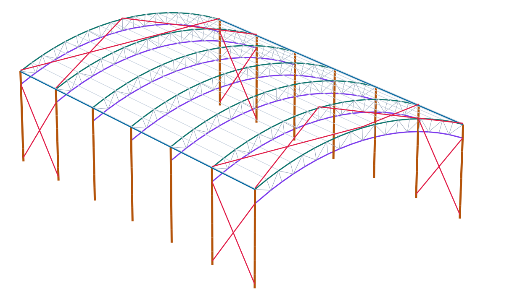
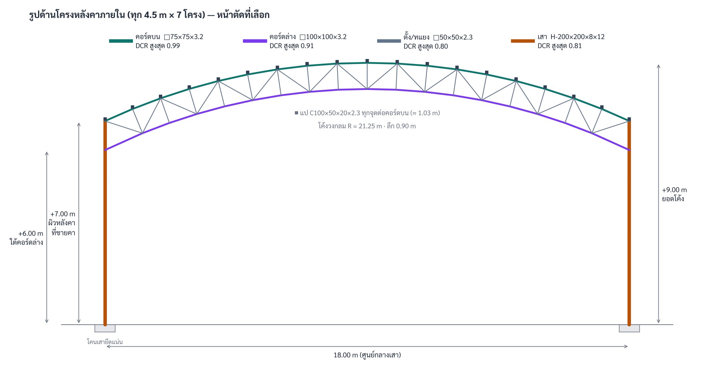
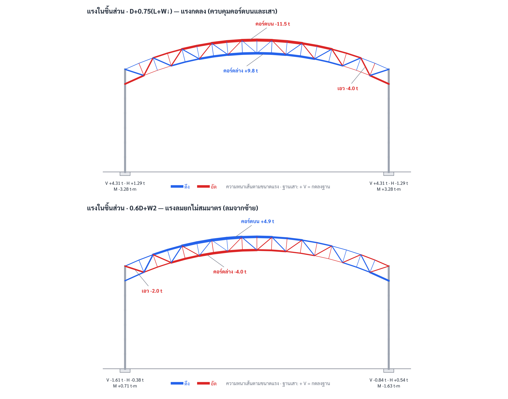
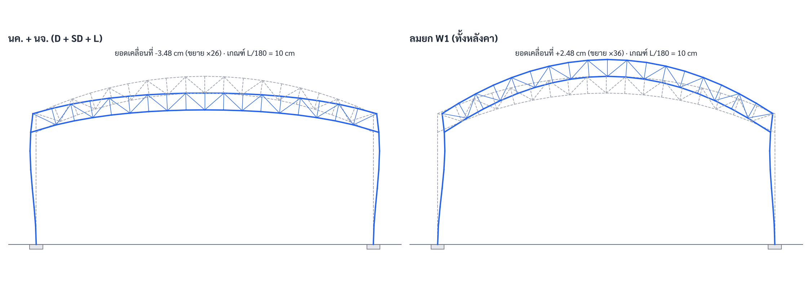

| สถานที่ | ในเขตโรงเรียน (ระบุชื่อ) จังหวัดอุทัยธานี |
| ลักษณะอาคาร | หลังคาเปิดโล่งรอบด้าน · ชายคา +7.00 m · ยอด +9.00 m |
| ระบบโครงสร้าง | โครงถักเหล็กโค้ง 7 โครง @ 4.50 m บนเสาเหล็ก H 14 ต้น |
| มาตรฐานอ้างอิง | กฎกระทรวง พ.ศ. 2566 · ประกาศ มท. 2567 · AISC 360-16 (ASD) |
| วันที่จัดทำ | 18 ต.ค. 2569 |

| 1. ข้อมูลโครงการและเกณฑ์การออกแบบ |
| 2. น้ำหนักบรรทุก |
| 3. แบบจำลองโครงสร้าง |
| 4. ชุดน้ำหนักบรรทุก |
| 5. ผลการวิเคราะห์ |
| 6. การตรวจสอบหน้าตัด |
| 7. ระยะแอ่นตัว |
| 8. แป โครงค้ำยัน และคานยึดหัวเสา |
| 9. แรงที่ฐานเสาสำหรับออกแบบฐานราก |
| 10. ปริมาณเหล็กโดยประมาณ |
| 11. การตรวจสอบความถูกต้องของการคำนวณ |
| 12. สมมติฐานและข้อจำกัด |
| ภาคผนวก ก — ซองแรงของชิ้นส่วนทุกชิ้น |
| ขนาดผัง | 18.00 × 27.00 m (ระยะศูนย์กลางเสา) |
|---|---|
| ช่วงพาด | 18.00 m |
| ระดับ | ผิวหลังคาที่ชายคา +7.00 m · ยอดโค้ง +9.00 m · ใต้คอร์ดล่างที่แนวเสา +6.00 m |
| รูปทรงหลังคา | ส่วนโค้งวงกลมรัศมี 21.25 m (สูงโค้ง 2.00 m) |
| โครงหลังคา | โครงถักโค้งคอร์ดขนาน ลึก 0.90 m ตามแนวรัศมี · 18 ช่อง · ตั้ง + ทแยงสลับ |
| ระยะโครง | 4.50 m · 7 โครง · เสา 14 ต้น |
| ลักษณะการใช้งาน | สนามกีฬาในโรงเรียน · เปิดโล่งรอบด้าน · พื้นวางบนดิน (ไม่อยู่ในขอบเขต) |
| การต่อ | คอร์ดบนและคอร์ดล่างยึดแน่นกับเสา (โครงข้อแข็ง) · โคนเสายึดแน่นกับตอม่อ คสล. |
| น้ำหนักบรรทุกและชุดน้ำหนัก | กฎกระทรวงกำหนดการรับน้ำหนัก ความต้านทาน ความคงทนของอาคาร พ.ศ. 2566 (ข้อ 6 ASD, ข้อ 11 นจ.) |
|---|---|
| แรงลม | มยผ. 1311 (ความเร็วลมอ้างอิงกลุ่ม 1) — ค่าสัมประสิทธิ์ตามบทที่ 12 |
| แผ่นดินไหว | กฎกระทรวงแผ่นดินไหว พ.ศ. 2564 — อุทัยธานีอยู่บริเวณที่ 2 |
| ระยะแอ่นตัว / ความชะลูด | ประกาศกระทรวงมหาดไทย 2567 ข้อ 8 ตาราง 1 และข้อ 27 |
| กำลังเหล็กรูปพรรณ | AISC 360-16 วิธีกำลังที่ยอมให้ (ASD, Ω = 1.67) |
| เหล็กรูปพรรณ / เหล็กกล่อง | SS400 (มอก. 1227) / STKR400 (มอก. 107) · Fy = 2,500 ksc · Fu = 4,080 ksc · E = 2,040,000 ksc |
|---|---|
| แป | เหล็กขึ้นรูปเย็นรูปตัวซี Fy = 2,500 ksc (ตรวจแบบง่าย — ดูบทที่ 12) |
| เหล็กค้ำยัน | เหล็กเส้นกลม SR24 Fy = 2,400 ksc พร้อมเกลียวเร่ง |
คิดสำหรับโครงภายใน 1 โครง ความกว้างรับน้ำหนัก 4.50 m (โครงริมรับครึ่งหนึ่ง) · ความยาวโค้งหลังคา 18.59 m
| รายการ | ค่า | ต่อโครง (kg) |
|---|---|---|
| หลังคาเหล็กรีด 0.47 mm + ฉนวน (D) | 10 kg/m² × 18.59 m × 4.50 m | 836 |
| แป (D) | 5.5 kg/m × 4.50 m × 19 แนว (เผื่อสูงกว่าแปที่เลือก) | 470 |
| น้ำหนักโครงถักและเสา (D) | คำนวณจากหน้าตัด × 7,850 kg/m³ × 1.10 (แผ่นต่อ) | 1,235 |
| ไฟสนามและสายไฟ (SD) | 10 kg/m² × 18.00 m × 4.50 m (ไม่นับในกรณี 0.6D) | 810 |
| น้ำหนักบรรทุกจรหลังคา (L) | 50 kg/m² × 18.00 × 4.50 (กฎกระทรวง 2566 ข้อ 11) | 4,050 |
| กรณี | CpCg สุทธิ (สมมติ ⚠) | แรงดิ่งรวม/โครง (kg) | แรงราบรวม/โครง (kg) |
|---|---|---|---|
| W1 ลมยกทั้งหลังคา | -1.3 | +4,822 | +0 |
| W2 ลมจากซ้าย (ไม่สมมาตร) | ต้นลม -1.6 / ท้ายลม -0.6 | +3,974 | -412 |
| W2R ลมจากขวา | ต้นลม -1.6 / ท้ายลม -0.6 | +4,187 | +412 |
| W4 ลมกดลง | +0.8 | -2,967 | -0 |
แรงลมกระทำตั้งฉากกับผิวโค้งที่จุดต่อคอร์ดบนแต่ละจุดตามพื้นที่รับ · กรณี W1, W2, W2R รวมแรงลากบนเสา CfCg = 2.0 × ความลึกหน้าตัดเสา · ค่าบวก = กดลง/ไปทางขวา
วิเคราะห์โครงภายในเป็นโครงข้อแข็ง 2 มิติด้วยวิธีไฟไนต์เอลิเมนต์ (direct stiffness) · 50 จุดต่อ · 85 ชิ้นส่วน · เสาและคอร์ดเป็น frame element (รับแรงตามแกนและโมเมนต์) · ตั้งและทแยงเป็น truss element (หมุดสองปลาย) · น้ำหนักกระทำที่จุดต่อ (แปวางทุกจุดต่อคอร์ดบน) · แรงแผ่บนเสาใช้แรงยึดปลาย (fixed-end forces)

| กลุ่ม | ในระนาบโครง | นอกระนาบโครง | เหตุผล |
|---|---|---|---|
| คอร์ดบน | ระยะจุดต่อ ≈ 1.03 m | ระยะจุดต่อ ≈ 1.03 m | แปยึดทุกจุดต่อ |
| คอร์ดล่าง | ระยะจุดต่อ ≈ 0.99 m | 3 ช่อง ≈ 3.0 m | ค้ำยันด้านข้าง (fly brace) ทุก 3 จุดต่อ |
| ตั้ง/ทแยง | ความยาวชิ้นส่วน | ความยาวชิ้นส่วน | K = 1.0 |
| เสา | K = 1.2 × 6.00 m | K = 1.0 × 7.00 m · Lb = 7.00 m | โครงเซได้ · หัวเสายึดด้วยคานยึดหัวเสา + X-bracing |
| ชุด | ส่วนประกอบ |
|---|---|
| D+L | 1·D + 1·SD + 1·L |
| D+0.75(L+W↓) | 1·D + 1·SD + 0.75·L + 0.75·W4 |
| D+0.75(L+W2) | 1·D + 1·SD + 0.75·L + 0.75·W2 |
| D+0.75(L+W2R) | 1·D + 1·SD + 0.75·L + 0.75·W2R |
| 0.6D+W1 | 0.6·D + 1·W1 |
| 0.6D+W2 | 0.6·D + 1·W2 |
| 0.6D+W2R | 0.6·D + 1·W2R |
| D+0.7E | 1·D + 1·SD + 0.7·E |
| D-0.7E | 1·D + 1·SD + -0.7·E |
| 0.6D+0.7E | 0.6·D + 0.7·E |
| 0.6D-0.7E | 0.6·D + -0.7·E |
D = น้ำหนักคงที่ · SD = ไฟและสายไฟ · L = นจ.หลังคา · W = แรงลม · E = แผ่นดินไหว · กรณีตรวจการถอน (0.6D) ไม่นับน้ำหนักไฟเพื่อความปลอดภัย


| ชิ้นส่วน | หน้าตัด | kg/m | DCR | ชิ้นที่ควบคุม | ชุดน้ำหนัก | ผล |
|---|---|---|---|---|---|---|
| คอร์ดบน | □75×75×3.2 | 7.0 | 0.99 | TC9 | D+0.75(L+W↓) | ผ่าน |
| คอร์ดล่าง | □100×100×3.2 | 9.5 | 0.91 | BC18 | D+0.75(L+W↓) | ผ่าน |
| ตั้ง/ทแยง | □50×50×2.3 | 3.3 | 0.80 | D17 | D+0.75(L+W↓) | ผ่าน |
| เสา | H-200×200×8×12 | 48.7 | 0.81 | COLR:cR5-b18 | D+0.75(L+W↓) | ผ่าน |
หน้าตัดเลือกอัตโนมัติจากรายการเหล็กที่มีในตลาด เป็นตัวที่เบาที่สุดที่ผ่านทุกชุดน้ำหนักและเกณฑ์ระยะแอ่นตัว · DCR = แรงที่เกิด ÷ กำลังที่ยอมให้
| รายการ | ค่าที่ได้ (cm) | เกณฑ์ (cm) | ผล |
|---|---|---|---|
| นจ. ≤ L/180 | 2.13 | 10.00 | ผ่าน |
| นค.+นจ. ≤ L/120 | 3.48 | 15.00 | ผ่าน |
| ลมยก ≤ L/180 | 2.48 | 10.00 | ผ่าน |
| หัวเสาเอียงจากลม ≤ H/150 | 0.96 | 4.67 | ผ่าน |
| หัวเสาเอียงจากแผ่นดินไหว (Cd·δ/Ie ≤ 0.02H) | 2.32 | 14.00 | ผ่าน |
| แป: นจ. ≤ L/180 | 1.61 | 2.50 | ผ่าน |
เกณฑ์เสาเอียงจากลม H/150 เป็นค่าที่ผู้ออกแบบเลือก (กฎหมายไม่ได้กำหนดสำหรับโครงหลังคาเปิดโล่ง) · เสาเอียงจากแผ่นดินไหวใช้ Cd = 3
เลือก C100×50×20×2.3 (4.17 kg/m · Sx = 16.8 cm³) · หน่วยแรงดัดที่ยอมให้ 0.6Fy = 1,500 ksc (จำกัดอัตราส่วนไม่เกิน 0.75 เพื่อเผื่อการโก่งเฉพาะที่ของเหล็กขึ้นรูปเย็น)
| กรณี | w (kg/m) | M (kg·m) | fb (ksc) | อัตราส่วน |
|---|---|---|---|---|
| D+L | +66.1 | 167 | 996 | 0.66 |
| 0.6D+W (ยก) | -67.0 | 170 | 1,009 | 0.67 |
ต่อเสา 1 ต้นของโครงภายใน · ชุดน้ำหนัก ASD (ไม่คูณตัวคูณเพิ่ม) · V + = กดลงฐาน · H + = ไปทาง +x (ซ้ายไปขวา) · M เป็นโมเมนต์ในระนาบโครงที่โคนเสา (โคนเสายึดแน่น)
| เสา | กรณี | ชุดน้ำหนัก | V (t) | H (t) | M (t·m) |
|---|---|---|---|---|---|
| ซ้าย | แรงกดสูงสุด | D+0.75(L+W↓) | +4.31 | +1.29 | -3.28 |
| ซ้าย | แรงถอนสูงสุด | 0.6D+W1 | -1.67 | -0.74 | +1.84 |
| ขวา | แรงกดสูงสุด | D+0.75(L+W↓) | +4.31 | -1.29 | +3.28 |
| ขวา | แรงถอนสูงสุด | 0.6D+W2R | -1.71 | +0.44 | -0.85 |
| รายการ | น้ำหนัก (kg) |
|---|---|
| โครงถัก 7 โครง | 3,081 |
| เสา 14 ต้น | 4,776 |
| แป 19 แนว | 2,138 |
| X-bracing + sag rod | 165 |
| คานยึดหัวเสา 2 แนว | 378 |
| รวม (+10 % แผ่นต่อ รอยเชื่อม สลักเกลียว) | 11,591 |
เฉลี่ย ≈ 23.8 kg/m² ของพื้นที่หลังคา 486 m² · ยังไม่รวมแผ่นหลังคา ฉนวน และงานฐานราก
| การตรวจ | ผล |
|---|---|
| สมดุลแรงทุกกรณีน้ำหนัก | ผลรวมแรงปฏิกิริยา = ผลรวมน้ำหนัก ต่างกันน้อยกว่า 10⁻⁹ kg ทุกกรณี |
| ตรวจมือ — นจ. | 50 × 18 × 4.5 = 4,050 kg/โครง ตรงกับแบบจำลอง (4,050 kg) |
| ตรวจมือ — ลมยก | 59.5 kg/m² × 81 m² = 4,824 kg/โครง ตรงกับแบบจำลอง (4,822 kg) |
| ตรวจไขว้กับโปรแกรมอื่น | สร้างแบบจำลองเดียวกันใน PyNite (ไลบรารี FEM โอเพนซอร์ส) — การเคลื่อนตัว แรงปฏิกิริยา แรงตามแกน และโมเมนต์ตรงกันทุกกรณี (ต่างกันน้อยกว่า 10⁻⁹) |
| รูปการเสียรูป | นค.+นจ.: ยอดยุบ หัวเสาถ่างออก · ลมยก: ยอดยก หัวเสาหุบเข้า — สอดคล้องกับพฤติกรรมของโครงโค้ง |
| # | รายการ |
|---|---|
| 1 | ⚠ ค่าสัมประสิทธิ์แรงลมหลังคาเปิดโล่ง เป็นค่าสมมติแบบเผื่อสูง (ไม่สามารถเข้าถึงตาราง มยผ. 1311 ขณะจัดทำ): ยก -1.3 · ไม่สมมาตร -1.6/-0.6 · กดลง +0.8 — กรณีลมกดลงควบคุมคอร์ดบนและเสา ต้องยืนยันเป็นอันดับแรก |
| 2 | ⚠ แผ่นดินไหว ใช้ SDS = 0.5 สมมติ (ไม่มีค่า SS, S1 รายอำเภอ) · ผลไม่ควบคุมการออกแบบ แต่ต้องตรวจกับประกาศ มท. รายอำเภอและชั้นดินจริง |
| 3 | ⚠ ประเภทความสำคัญ "มาก" (โรงเรียนจุ > 250 คน) — ถ้าเป็น "ปกติ" แรงลมลดลง 15 % |
| 4 | ระดับใต้คอร์ดล่างที่แนวเสา +6.00 m — ถ้าต้องการ +7.00 m ต้องยกเสาและวิเคราะห์ใหม่ |
| 5 | คอร์ดล่างต้องมีค้ำยันด้านข้าง (fly brace) จากแปทุก 3 จุดต่อ |
| 6 | ยังไม่ได้ออกแบบ: จุดต่อและรอยเชื่อม · แผ่นฐานเสาและสลักเกลียวยึด · ตอม่อและฐานราก · แปตามมาตรฐานเหล็กขึ้นรูปเย็น |
| 7 | แรงลมเฉพาะที่ขอบหลังคาสำหรับยึดแผ่นหลังคาและแปต้องคำนวณแยก (สูงกว่าค่าที่ใช้กับโครงหลัก) |
| 8 | คุณสมบัติหน้าตัดคำนวณจากขนาด · เหล็ก H ไม่รวมมุมโค้งโคนปีก (ค่าต่ำกว่าตารางผู้ผลิตเล็กน้อย = ปลอดภัย) |
| 9 | วิเคราะห์แบบเชิงเส้นอันดับหนึ่ง + ตัวขยาย B2 สำหรับเสา · ไม่ได้วิเคราะห์การโก่งเดาะทั้งโครง (global buckling) ของโครงโค้ง |
N + = ดึง · N − = อัด · |M| สูงสุดตามความยาวชิ้นส่วน · DCR และชุดน้ำหนักที่ควบคุมตามบทที่ 6 · ชื่อจุดต่อดูรูปที่ 1 (t = คอร์ดบน, b = คอร์ดล่าง นับจากซ้าย)
| ชิ้นส่วน | กลุ่ม | หน้าตัด | L (m) | N ดึงสูงสุด (t) | N อัดสูงสุด (t) | |M| (kg·m) | DCR | ชุดที่ควบคุม |
|---|---|---|---|---|---|---|---|---|
| COLL:cL0-cL1 | เสา | H-200×200×8×12 | 1.00 | 1.68 | -4.28 | 3,279 | 0.62 | D+0.75(L+W↓) |
| COLL:cL1-cL2 | เสา | H-200×200×8×12 | 1.00 | 1.71 | -4.23 | 1,989 | 0.40 | D+0.75(L+W↓) |
| COLL:cL2-cL3 | เสา | H-200×200×8×12 | 1.00 | 1.75 | -4.17 | 698 | 0.18 | D+0.75(L+W↓) |
| COLL:cL3-cL4 | เสา | H-200×200×8×12 | 1.00 | 1.78 | -4.12 | 1,883 | 0.38 | D+0.75(L+W↓) |
| COLL:cL4-cL5 | เสา | H-200×200×8×12 | 1.00 | 1.81 | -4.07 | 3,174 | 0.60 | D+0.75(L+W↓) |
| COLL:cL5-b0 | เสา | H-200×200×8×12 | 1.00 | 1.84 | -4.01 | 4,467 | 0.81 | D+0.75(L+W↓) |
| COLL:b0-t0 | เสา | H-200×200×8×12 | 1.00 | 1.10 | -1.24 | 4,246 | 0.74 | D+0.75(L+W↓) |
| COLR:cR0-cR1 | เสา | H-200×200×8×12 | 1.00 | 1.73 | -4.28 | 3,279 | 0.62 | D+0.75(L+W↓) |
| COLR:cR1-cR2 | เสา | H-200×200×8×12 | 1.00 | 1.76 | -4.23 | 1,989 | 0.40 | D+0.75(L+W↓) |
| COLR:cR2-cR3 | เสา | H-200×200×8×12 | 1.00 | 1.79 | -4.17 | 698 | 0.18 | D+0.75(L+W↓) |
| COLR:cR3-cR4 | เสา | H-200×200×8×12 | 1.00 | 1.82 | -4.12 | 1,883 | 0.38 | D+0.75(L+W↓) |
| COLR:cR4-cR5 | เสา | H-200×200×8×12 | 1.00 | 1.86 | -4.07 | 3,174 | 0.60 | D+0.75(L+W↓) |
| COLR:cR5-b18 | เสา | H-200×200×8×12 | 1.00 | 1.89 | -4.01 | 4,467 | 0.81 | D+0.75(L+W↓) |
| COLR:b18-t18 | เสา | H-200×200×8×12 | 1.00 | 1.09 | -1.24 | 4,246 | 0.74 | D+0.75(L+W↓) |
| TC1 | คอร์ดบน | □75×75×3.2 | 1.03 | 1.04 | -1.17 | 28 | 0.10 | D+0.75(L+W↓) |
| BC1 | คอร์ดล่าง | □100×100×3.2 | 1.41 | 3.07 | -6.13 | 221 | 0.91 | D+0.75(L+W↓) |
| TC2 | คอร์ดบน | □75×75×3.2 | 1.03 | 1.11 | -1.15 | 9 | 0.06 | 0.6D+W2 |
| BC2 | คอร์ดล่าง | □100×100×3.2 | 0.99 | 1.42 | -1.32 | 43 | 0.08 | 0.6D+W2 |
| TC3 | คอร์ดบน | □75×75×3.2 | 1.03 | 3.28 | -4.65 | 15 | 0.41 | D+0.75(L+W↓) |
| BC3 | คอร์ดล่าง | □100×100×3.2 | 0.99 | 1.43 | -1.32 | 34 | 0.08 | 0.6D+W2 |
| TC4 | คอร์ดบน | □75×75×3.2 | 1.03 | 3.29 | -4.57 | 15 | 0.40 | D+0.75(L+W↓) |
| BC4 | คอร์ดล่าง | □100×100×3.2 | 0.99 | 4.77 | -3.23 | 34 | 0.31 | D+0.75(L+W↓) |
| TC5 | คอร์ดบน | □75×75×3.2 | 1.03 | 4.61 | -8.43 | 22 | 0.73 | D+0.75(L+W↓) |
| BC5 | คอร์ดล่าง | □100×100×3.2 | 0.99 | 4.79 | -3.23 | 50 | 0.33 | D+0.75(L+W↓) |
| TC6 | คอร์ดบน | □75×75×3.2 | 1.03 | 4.62 | -8.38 | 22 | 0.72 | D+0.75(L+W↓) |
| BC6 | คอร์ดล่าง | □100×100×3.2 | 0.99 | 8.11 | -4.04 | 50 | 0.51 | D+0.75(L+W↓) |
| TC7 | คอร์ดบน | □75×75×3.2 | 1.03 | 5.16 | -10.75 | 27 | 0.92 | D+0.75(L+W↓) |
| BC7 | คอร์ดล่าง | □100×100×3.2 | 0.99 | 8.12 | -4.04 | 60 | 0.53 | D+0.75(L+W↓) |
| TC8 | คอร์ดบน | □75×75×3.2 | 1.03 | 5.17 | -10.72 | 27 | 0.92 | D+0.75(L+W↓) |
| BC8 | คอร์ดล่าง | □100×100×3.2 | 0.99 | 9.81 | -4.34 | 60 | 0.62 | D+0.75(L+W↓) |
| TC9 | คอร์ดบน | □75×75×3.2 | 1.03 | 5.56 | -11.52 | 28 | 0.99 | D+0.75(L+W↓) |
| BC9 | คอร์ดล่าง | □100×100×3.2 | 0.99 | 9.82 | -4.34 | 64 | 0.63 | D+0.75(L+W↓) |
| TC10 | คอร์ดบน | □75×75×3.2 | 1.03 | 5.56 | -11.52 | 28 | 0.99 | D+0.75(L+W↓) |
| BC10 | คอร์ดล่าง | □100×100×3.2 | 0.99 | 9.82 | -4.38 | 64 | 0.63 | D+0.75(L+W↓) |
| TC11 | คอร์ดบน | □75×75×3.2 | 1.03 | 5.39 | -10.72 | 27 | 0.92 | D+0.75(L+W↓) |
| BC11 | คอร์ดล่าง | □100×100×3.2 | 0.99 | 9.81 | -4.38 | 60 | 0.62 | D+0.75(L+W↓) |
| TC12 | คอร์ดบน | □75×75×3.2 | 1.03 | 5.39 | -10.75 | 27 | 0.92 | D+0.75(L+W↓) |
| BC12 | คอร์ดล่าง | □100×100×3.2 | 0.99 | 8.12 | -4.37 | 60 | 0.53 | D+0.75(L+W↓) |
| TC13 | คอร์ดบน | □75×75×3.2 | 1.03 | 4.91 | -8.38 | 22 | 0.72 | D+0.75(L+W↓) |
| BC13 | คอร์ดล่าง | □100×100×3.2 | 0.99 | 8.11 | -4.37 | 50 | 0.51 | D+0.75(L+W↓) |
| TC14 | คอร์ดบน | □75×75×3.2 | 1.03 | 4.90 | -8.43 | 22 | 0.73 | D+0.75(L+W↓) |
| BC14 | คอร์ดล่าง | □100×100×3.2 | 0.99 | 4.79 | -3.34 | 50 | 0.33 | D+0.75(L+W↓) |
| TC15 | คอร์ดบน | □75×75×3.2 | 1.03 | 3.39 | -4.57 | 15 | 0.40 | D+0.75(L+W↓) |
| BC15 | คอร์ดล่าง | □100×100×3.2 | 0.99 | 4.77 | -3.34 | 34 | 0.31 | D+0.75(L+W↓) |
| TC16 | คอร์ดบน | □75×75×3.2 | 1.03 | 3.37 | -4.65 | 15 | 0.41 | D+0.75(L+W↓) |
| BC16 | คอร์ดล่าง | □100×100×3.2 | 0.99 | 1.34 | -1.24 | 34 | 0.08 | 0.6D+W2R |
| TC17 | คอร์ดบน | □75×75×3.2 | 1.03 | 1.07 | -1.06 | 9 | 0.06 | 0.6D+W2R |
| BC17 | คอร์ดล่าง | □100×100×3.2 | 0.99 | 1.34 | -1.24 | 43 | 0.08 | 0.6D+W2R |
| TC18 | คอร์ดบน | □75×75×3.2 | 1.03 | 1.04 | -1.08 | 28 | 0.10 | D+0.75(L+W↓) |
| BC18 | คอร์ดล่าง | □100×100×3.2 | 1.41 | 2.79 | -6.13 | 221 | 0.91 | D+0.75(L+W↓) |
| V1 | ตั้ง/ทแยง | □50×50×2.3 | 0.90 | 0.23 | -0.34 | 0 | 0.03 | D+0.75(L+W↓) |
| V2 | ตั้ง/ทแยง | □50×50×2.3 | 0.90 | 0.14 | -0.09 | 0 | 0.01 | D+0.75(L+W↓) |
| V3 | ตั้ง/ทแยง | □50×50×2.3 | 0.90 | 0.12 | -0.11 | 0 | 0.01 | D+0.75(L+W↓) |
| V4 | ตั้ง/ทแยง | □50×50×2.3 | 0.90 | 0.34 | -0.18 | 0 | 0.03 | D+0.75(L+W↓) |
| V5 | ตั้ง/ทแยง | □50×50×2.3 | 0.90 | 0.09 | -0.03 | 0 | 0.01 | D+0.75(L+W2) |
| V6 | ตั้ง/ทแยง | □50×50×2.3 | 0.90 | 0.50 | -0.22 | 0 | 0.04 | D+0.75(L+W↓) |
| V7 | ตั้ง/ทแยง | □50×50×2.3 | 0.90 | 0.17 | -0.10 | 0 | 0.01 | D+0.75(L+W↓) |
| V8 | ตั้ง/ทแยง | □50×50×2.3 | 0.90 | 0.58 | -0.24 | 0 | 0.05 | D+0.75(L+W↓) |
| V9 | ตั้ง/ทแยง | □50×50×2.3 | 0.90 | 0.21 | -0.13 | 0 | 0.02 | D+0.75(L+W↓) |
| V10 | ตั้ง/ทแยง | □50×50×2.3 | 0.90 | 0.58 | -0.24 | 0 | 0.05 | D+0.75(L+W↓) |
| V11 | ตั้ง/ทแยง | □50×50×2.3 | 0.90 | 0.17 | -0.08 | 0 | 0.01 | D+0.75(L+W↓) |
| V12 | ตั้ง/ทแยง | □50×50×2.3 | 0.90 | 0.50 | -0.23 | 0 | 0.04 | D+0.75(L+W↓) |
| V13 | ตั้ง/ทแยง | □50×50×2.3 | 0.90 | 0.08 | -0.01 | 0 | 0.01 | D-0.7E |
| V14 | ตั้ง/ทแยง | □50×50×2.3 | 0.90 | 0.34 | -0.18 | 0 | 0.03 | D+0.75(L+W↓) |
| V15 | ตั้ง/ทแยง | □50×50×2.3 | 0.90 | 0.11 | -0.11 | 0 | 0.01 | D+0.75(L+W↓) |
| V16 | ตั้ง/ทแยง | □50×50×2.3 | 0.90 | 0.14 | -0.09 | 0 | 0.01 | D+0.75(L+W↓) |
| V17 | ตั้ง/ทแยง | □50×50×2.3 | 0.90 | 0.22 | -0.34 | 0 | 0.03 | D+0.75(L+W↓) |
| D1 | ตั้ง/ทแยง | □50×50×2.3 | 1.35 | 3.89 | -1.99 | 0 | 0.61 | D+0.75(L+W↓) |
| D2 | ตั้ง/ทแยง | □50×50×2.3 | 1.35 | 1.90 | -3.98 | 0 | 0.80 | D+0.75(L+W↓) |
| D3 | ตั้ง/ทแยง | □50×50×2.3 | 1.35 | 3.34 | -1.55 | 0 | 0.53 | D+0.75(L+W↓) |
| D4 | ตั้ง/ทแยง | □50×50×2.3 | 1.35 | 1.39 | -2.99 | 0 | 0.60 | D+0.75(L+W↓) |
| D5 | ตั้ง/ทแยง | □50×50×2.3 | 1.35 | 2.37 | -1.08 | 0 | 0.37 | D+0.75(L+W↓) |
| D6 | ตั้ง/ทแยง | □50×50×2.3 | 1.35 | 1.03 | -1.97 | 0 | 0.40 | D+0.75(L+W↓) |
| D7 | ตั้ง/ทแยง | □50×50×2.3 | 1.35 | 1.31 | -0.94 | 0 | 0.21 | D+0.75(L+W↓) |
| D8 | ตั้ง/ทแยง | □50×50×2.3 | 1.35 | 0.98 | -0.89 | 0 | 0.09 | D+0.75(L+W↓) |
| D9 | ตั้ง/ทแยง | □50×50×2.3 | 1.35 | 0.74 | -0.87 | 0 | 0.09 | 0.6D+W2R |
| D10 | ตั้ง/ทแยง | □50×50×2.3 | 1.35 | 0.60 | -0.73 | 0 | 0.07 | 0.6D+W2 |
| D11 | ตั้ง/ทแยง | □50×50×2.3 | 1.35 | 0.82 | -0.89 | 0 | 0.09 | D+0.75(L+W↓) |
| D12 | ตั้ง/ทแยง | □50×50×2.3 | 1.35 | 1.31 | -0.80 | 0 | 0.21 | D+0.75(L+W↓) |
| D13 | ตั้ง/ทแยง | □50×50×2.3 | 1.35 | 0.88 | -1.97 | 0 | 0.40 | D+0.75(L+W↓) |
| D14 | ตั้ง/ทแยง | □50×50×2.3 | 1.35 | 2.37 | -1.03 | 0 | 0.37 | D+0.75(L+W↓) |
| D15 | ตั้ง/ทแยง | □50×50×2.3 | 1.35 | 1.34 | -2.99 | 0 | 0.60 | D+0.75(L+W↓) |
| D16 | ตั้ง/ทแยง | □50×50×2.3 | 1.35 | 3.34 | -1.52 | 0 | 0.53 | D+0.75(L+W↓) |
| D17 | ตั้ง/ทแยง | □50×50×2.3 | 1.35 | 1.97 | -3.98 | 0 | 0.80 | D+0.75(L+W↓) |
| D18 | ตั้ง/ทแยง | □50×50×2.3 | 1.35 | 3.89 | -2.09 | 0 | 0.61 | D+0.75(L+W↓) |